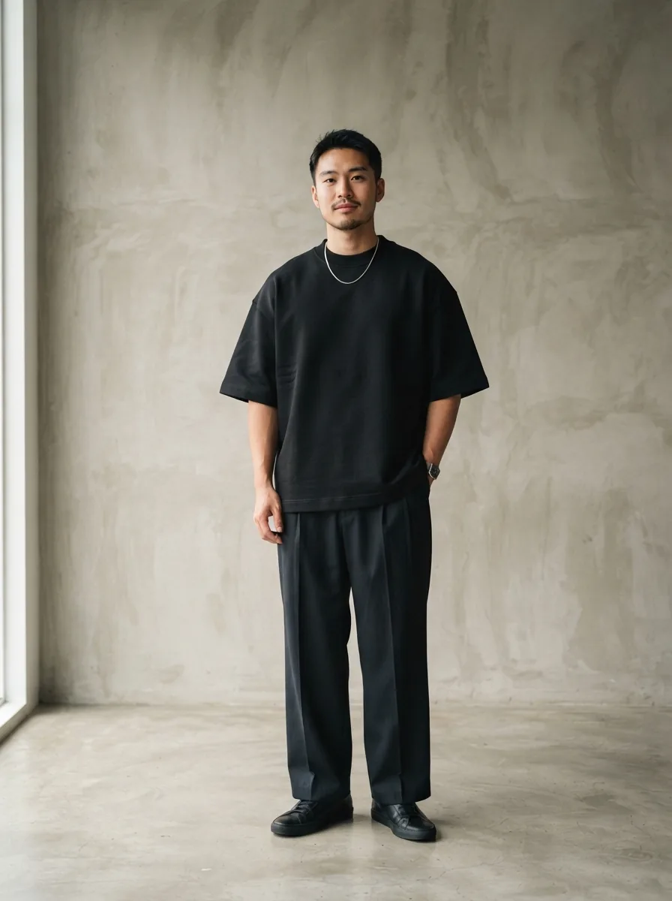
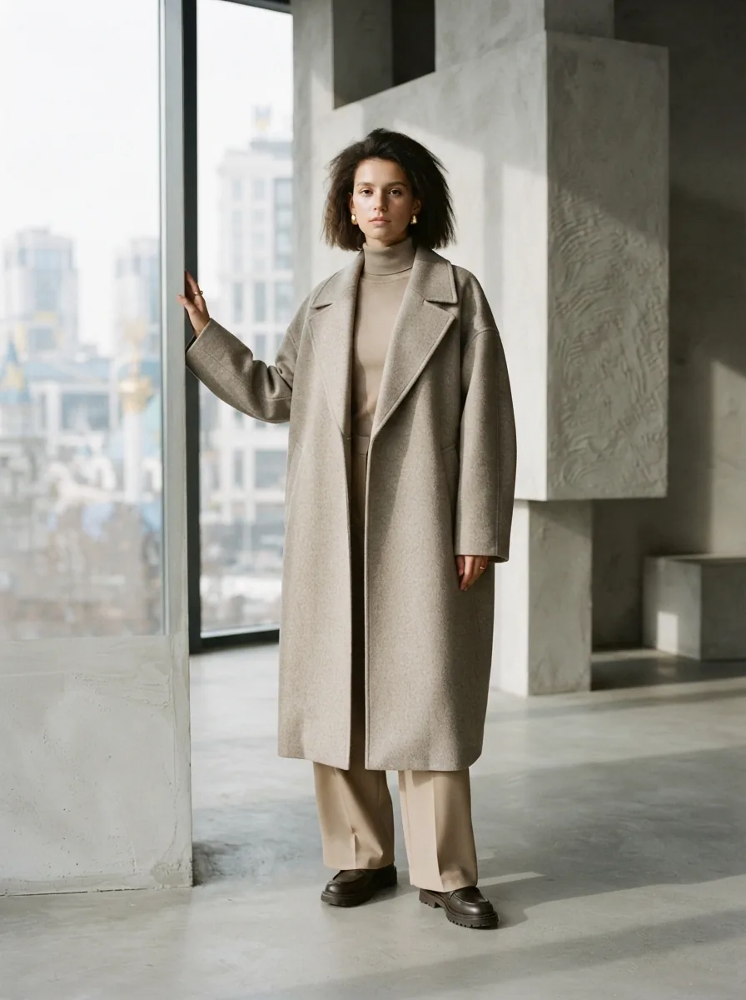
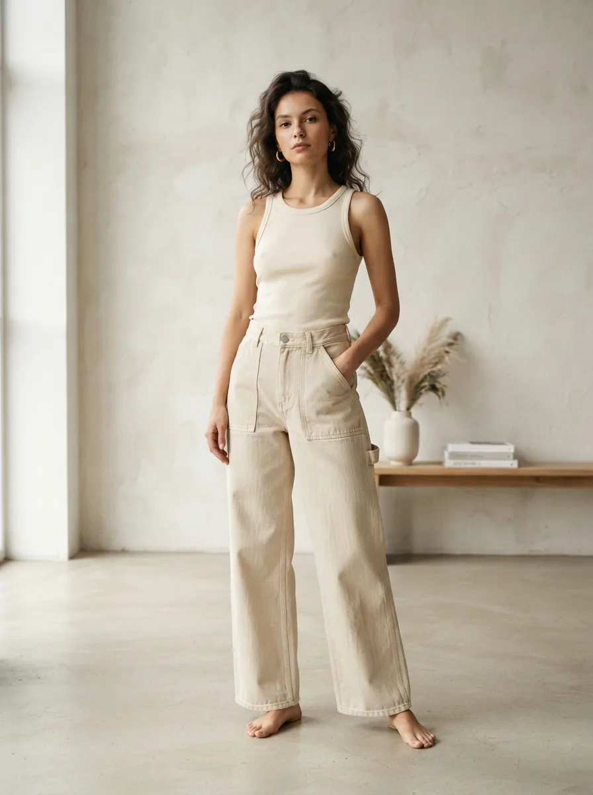
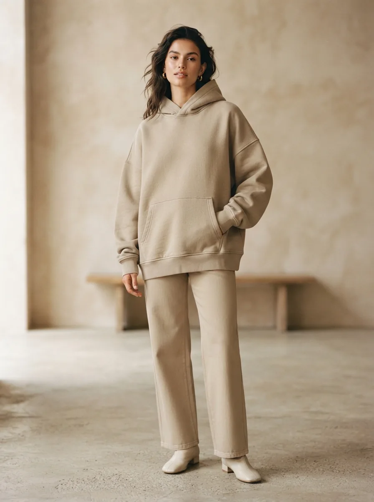
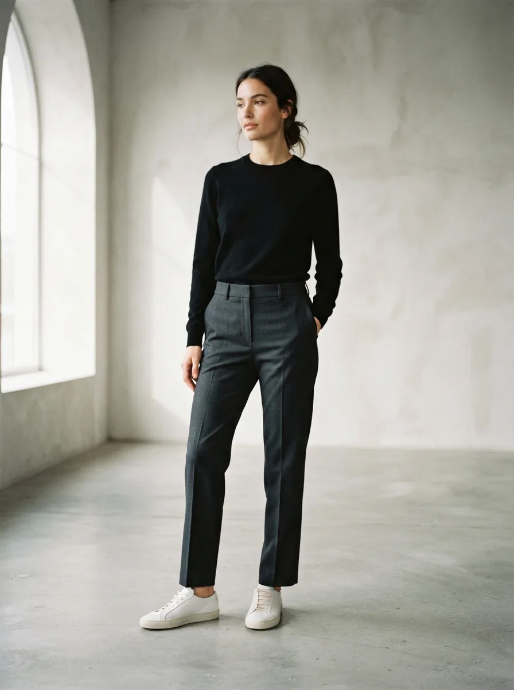
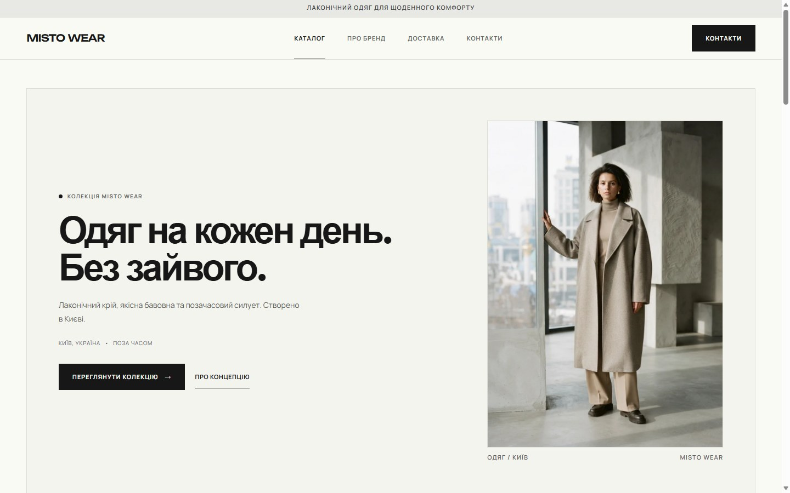
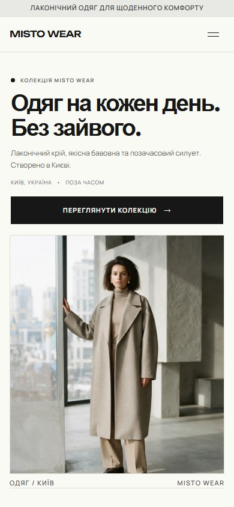
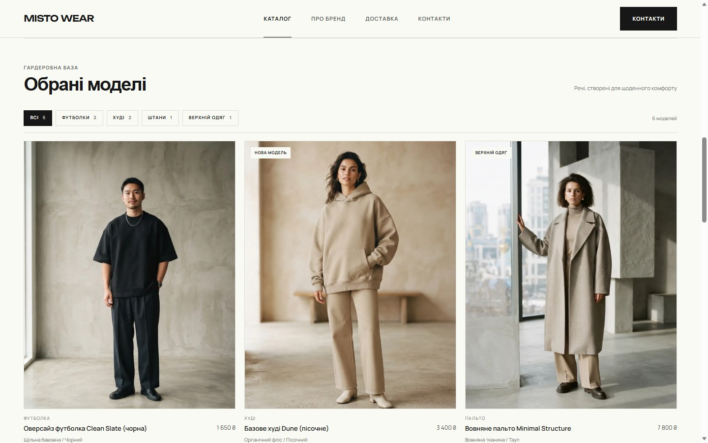
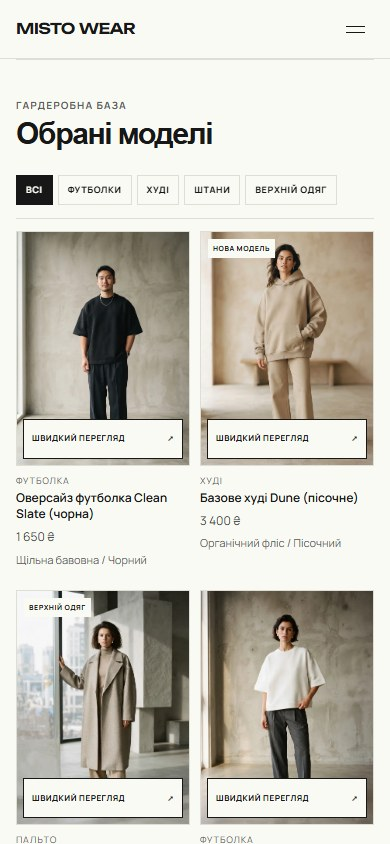

01 / CLEAN SLATE
SELECTED WORK 001
INDEPENDENT CONCEPT PROJECT
Minimalist fashion. Built for everyday movement.

01 THE PROJECT
MISTO WEAR is a conceptual digital experience created for a fictional Ukrainian contemporary fashion label.
The project explores how restrained typography, thoughtful layouts and editorial photography can create a distinctive, easy-to-navigate online fashion catalog.
02 THE CONCEPT
The concept centers on clarity and restraint. Large typography, neutral colors and carefully selected imagery keep the focus on the clothing while creating a distinctive editorial atmosphere.


03 VISUAL DIRECTION
BRAND / UNBOUNDED
MISTO
DISPLAY / SPACE GROTESK
Everyday
essentials.
BODY / MANROPE
Considered pieces for everyday movement.
#FAFAF5#F4F4EF#E8E8E4#171717#656764#DEDED5PRODUCT PRESENTATION / EDITORIAL GRID
Consistent image proportions, quiet labels and generous breathing room.

01 / CLEAN SLATE
02 / DUNE

03 / LINE
04 RESPONSIVE EXPERIENCE
The live concept adapts its navigation, content and catalog layout to desktop and mobile screens.
1440 × 900 PX
390 × 844 PX
PRODUCT CATALOG / DESKTOP + MOBILE
Real product filters, imagery and responsive listing cards from the live concept.
1440 × 900 PX
390 × 844 PX
05 DEVELOPMENT
The visual direction was explored through AI-assisted design workflows and translated into a responsive frontend using HTML, CSS and JavaScript.
The development process focused on preserving the approved visual concept while implementing navigation, product filtering, product previews and layouts for different screen sizes.
Independent concept project. Not commissioned client work.
06 FINAL RESULT
A complete concept website combining minimalist fashion aesthetics with responsive frontend development.